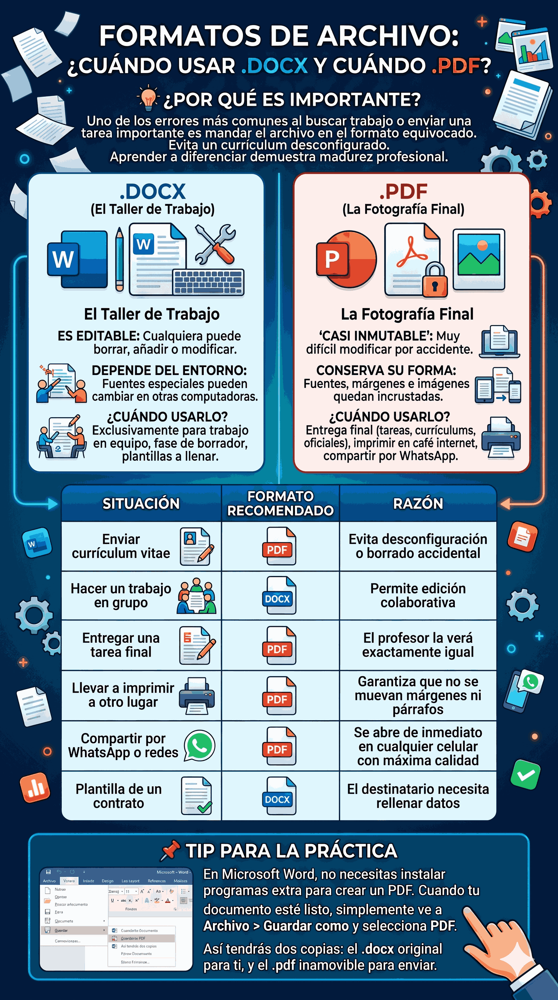

Formatos de Archivo: ¿Cuándo usar .DOCX y cuándo .PDF?
Descubre la diferencia vital entre un documento "editable" y un documento "final", y por qué elegir el correcto te salvará de muchos apuros profesionales.

1. El Archivo .DOCX (El Taller de Trabajo)
El formato .docx es la extensión nativa y actual de Microsoft Word (anteriormente era solo .doc). Piensa en este formato como un "taller" o un lienzo de trabajo abierto.
- Es editable: Cualquiera que abra el archivo puede borrar, añadir o modificar el texto, las imágenes y la estructura.
- Depende del entorno: Si usaste una fuente o tipo de letra especial (como una que descargaste de internet) que la otra persona no tiene instalada, su computadora la cambiará por otra, desordenando a veces todo tu documento.
¿Cuándo usarlo? Úsalo exclusivamente cuando necesites trabajar en equipo, cuando estés en la fase de borrador, o cuando te pidan explícitamente un archivo que ellos necesitan modificar (por ejemplo, una plantilla para llenar datos).
2. El Archivo .PDF (La Fotografía Final)
PDF significa Portable Document Format (Formato de Documento Portátil). Fue inventado para solucionar el mayor problema del .docx: asegurar que un documento se vea exactamente igual en cualquier pantalla, sin importar si es Windows, Mac, un teléfono celular o una tablet.
Piensa en el PDF como una "fotografía" de tu documento finalizado.
- Es "Casi Inmutable": Por defecto, es muy difícil que alguien modifique el texto de un PDF por accidente, dándote seguridad.
- Conserva su forma: Las fuentes, los márgenes y las imágenes quedan incrustadas. Si tu hoja tenía una foto a la izquierda, en el PDF siempre estará a la izquierda, la abra quien la abra.
¿Cuándo usarlo? Úsalo siempre que vayas a entregar un trabajo final: tareas para el profesor, envío de currículums, o documentos oficiales. También es obligatorio si vas a llevar tu archivo a imprimir a un café internet o si vas a compartirlo por WhatsApp. Si llevas un .docx a otra computadora con una versión diferente de Word, es casi seguro que las imágenes se muevan o los párrafos salten a la siguiente página. El PDF evita todo ese desastre.
Resumen Práctico
| Situación | Formato Recomendado | Razón |
|---|---|---|
| Enviar currículum vitae | Evita que se desconfigure o que alguien borre tus datos por error al abrirlo. | |
| Hacer un trabajo en grupo | .DOCX | Permite que todos los integrantes del equipo editen y agreguen su parte del texto. |
| Entregar una tarea final | El profesor la verá exactamente igual a como la diseñaste en tu computadora. | |
| Llevar a imprimir a otro lugar | Garantiza que una versión distinta de Word no mueva tus márgenes ni salte tus párrafos de página. | |
| Compartir por WhatsApp o redes | Se abre de inmediato en cualquier celular con la máxima calidad y sin requerir apps especiales. | |
| Plantilla de un contrato | .DOCX | El destinatario necesita rellenar los campos en blanco con sus datos personales. |